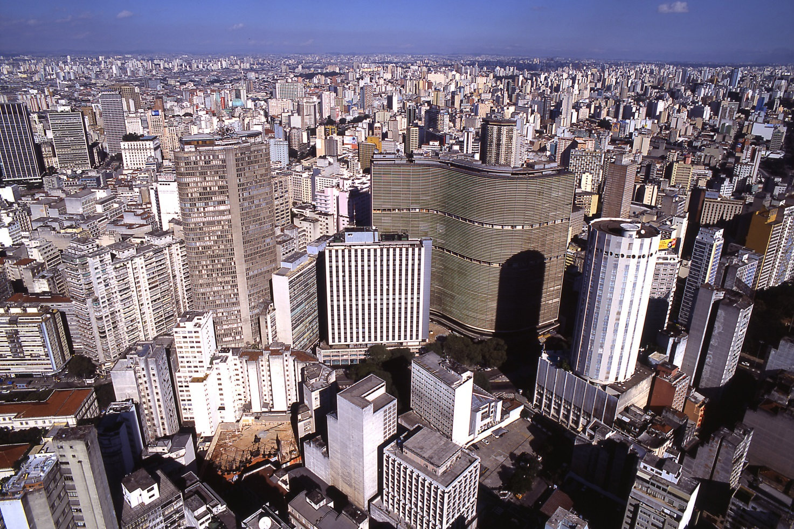
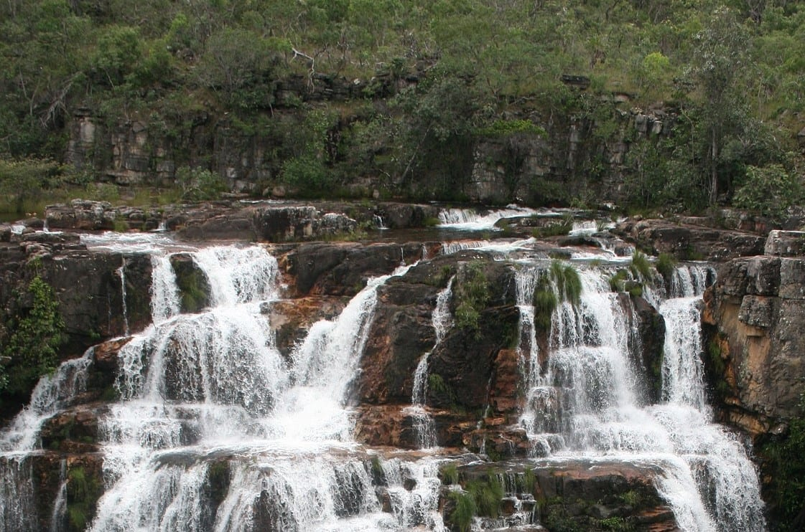
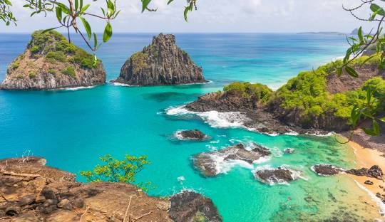

Come and discover Brazil, the most welcoming people in the world!
São PauloThe largest capital in Latin America with around 12.4 million inhabitants and receiving over 16.9 million tourists every year, it was once one of the largest coffee exporters in history and today is known for being the largest commercial and financial center in Brazil and the largest stock exchange in Latin America.  |
GoiásGoias, the state with beautiful waterfalls and rivers, has the beautiful historic city of Goias Velho where the poet Cora Corealina lived. Come and enjoy the thermal waters of Caldas Novas, and trails through the cerrado. Don't forget to visit the capital Goiânia and try its famous cuisine.  |
Fernando de NoronhaThe beautiful Fernando de Noronha is a Brazilian archipelago in the state of Pernambuco. It is made up of 21 islands and is located in the Atlantic Ocean, northeast of mainland Brazil Declared a natural heritage site by UNESCO in 2001, it boasts stunning beaches where you can dive with dolphins and sea turtles, and enjoy the company of different species of fish. Fernando de Noronha is so special that there is a limit on the number of annual visitors, so hurry up and schedule your visit now!  |